Adunarea este o operație aritmetică elementară care totalizează două sau mai multe mărimi, numite „termenii adunării” într-o singură valoare, numită suma sau „totalul” mărimilor respective.
ADUNAREA NUMERELOR NATURALE
Suma numerelor naturale a și b este un număr natural notat cu a+b, iar a și b se numesc termenii sumei.
Sumă = adunare a+b=c unde a+b sunt denumiti termenii sumei, iar c este denumit ca suma
Adunarea numerelor naturale are următoarele proprietăți :
este asociativă , adică oricare ar fi numerele naturale a , b și c, avem : (a+b)+c = a+(b+c) (3+2)+4=3+(2+4)
este comutativă , adică oricare ar fi numerele naturale a și b, avem : a+b = b+a 3+2=2+3
numărul 0 este element neutru , adică oricare ar fi numărul natural a, avem : a+0 = 0+ a = a 2+0=0+2=2
50
70
25
60
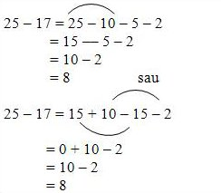
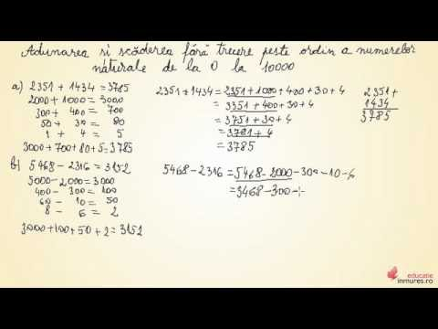
Ce este scaderea?
Scăderea este una dintre cele 4 operații aritmetice elementare; este inversul adunării, însemnând că dacă începem cu orice număr la care adăugăm orice număr, apoi scădem numărul pe care l-am adunat, ne întoarcem la numărul cu care am început.
Scăderea este reprezentată prin semnul minus.
Denumirile membrilor formulei
c - b = a
sunt descăzut (c) - scăzător (b) = diferență (a).
Scăderea este utilizată pentru patru procese înrudite:
Dintr-o mulțime, se înlătură (se scade) un număr cunoscut de elemente. Spre exemplu, din 5 mere minus 2 mere, rămân 3 mere.
Dintr-o măsură, se înlătură o cantitate măsurată în aceleași unități. Spre exemplu, dacă eu cântăresc 90 kilograme și slăbesc 5 kilograme, voi cântări 90 − 5 = 85 kilograme.
Compararea a două cantități pentru a se găsi diferența dintre ele. Spre exemplu, diferența dintre 800 lei și 600 lei este 800 − 600 = 200 lei. Acest proces mai este cunoscut sub numele de scădere comparativă.
Pentru a găsi distanța dintre două locuri la o distanță fixă de locul de plecare. Spre exemplu, dacă circul pe o autostradă și văd o bornă pe care este marcată distanța de 150 kilometri și, mai târziu, alta pe care este marcată distanța de
160 kilometri, distanța parcursă între cele două borne este de 160 − 150 = 10 kilometri.
Scăderea fundamentală: numere întregi
Fie un segment de dreaptă de lungime b, având capătul stâng notat cu a și cel drept notat cu c. Începând din a, sunt necesari b pași pentru a ajunge în c.
Această mișcare spre dreapta este reprezentată matematic prin intermediul adunării:
a + b = c
Din c, sunt necesari b pași înspre stânga pentru a reveni în punctul a. Această mișcare spre stânga este modelată matematic prin intermediul scăderii:
c - b = a
Fie un segment de dreaptă notat cu numerele 1, 2 și 3. Din poziția 3, este nevoie de 0 pași pentru a rămâne în poziția 3: 3 − 0 = 0. Sunt necesari 2 pași spre stânga pentru a ajunge pe poziția 1: 3 − 2 = 1. Această imagine nu poate ilustra ce
se întâmplă dacă se parcurg cel puțin 3 pași la stânga, începând din poziția 3. Pentru a reprezenta o astfel de operație, segmentul de dreaptă trebuie să fie extins.
Pentru a scădea numere întregi alese arbitrar, se începe cu o semidreaptă care conține toate numerele naturale (0, 1, 2, 3, 4, 5, 6, ...). Din 3, sunt necesari 3 pași pentru a ajunge la 0: 3 − 3 = 0, dar 3 − 4 este din nou o operație ce nu poate
fi reprezentată pe segmentul de dreaptă. Pentru a soluționa problema, fie o dreaptă ce conține toate numerele întregi (..., -3, -2, -1, 0, 1, 2, 3, ...). Din 3, sunt necesari 4 pași spre stânga pentru a ajunge în poziția -1: 3 - 4 = -1.>
SCĂDEREA NUMERELOR NATURALE
Oricare ar fi numerele a și b , cu a b, există un număr natural c = a – b
c se numește diferența numerelor a și b ,
iar a și b se numesc termenii diferenței .
a = descăzut , b = scăzător
DIFERENȚĂ = SCĂDERE
Observație : Scăderea nu este comutativă, nici asociativă și nu are element neutru.
Adunarea si scaderea sunt operatii inverse
a-b=c
5-3=2
c+b=a
2+3=5
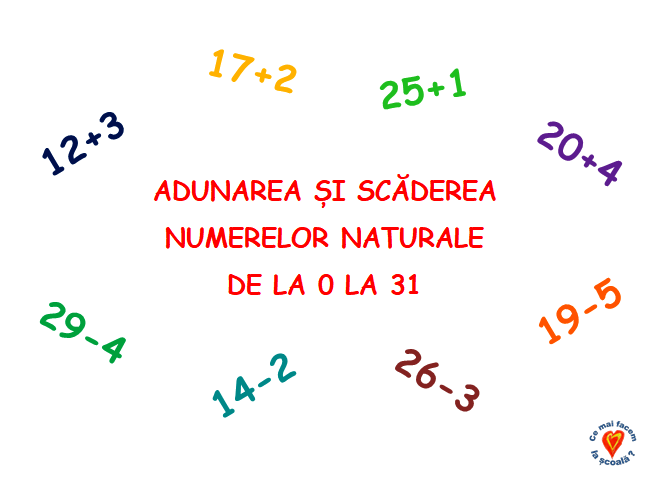
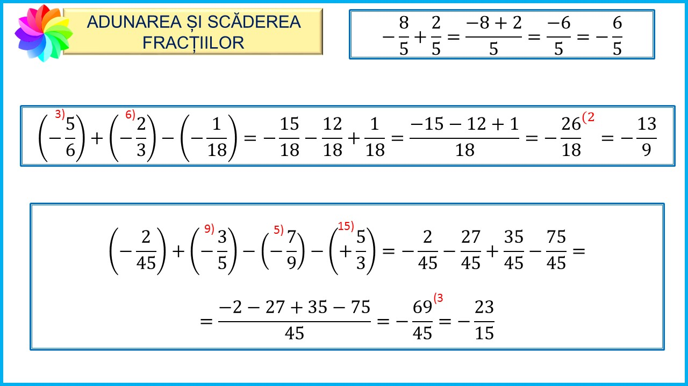
Ce este inmultirea?
Produsul unui număr natural, care este diferit de 0 și 1, se exprimă printr-o sumă în care primul termen apare de atâtea ori câte arată al doilea număr natural.
Excepțiile înmulțirii:
produsul numărului natural 0 este egal cu 0;
produsul numărului natural 1 este egal cu numărul natural considerat;
0*0=050*0=045*1=45120*1=120
Proprietățile înmulțirii
a * b = b * a - comutativitatea înmulțirii;
( a * b ) * c = a * ( b * c ) - asociativitatea înmulțirii;
există un număr natural 1 numit element neutru care nu se modifică prin înmulțire;
a * ( b + c ) = a * b + a * c - distributivitatea înmulțirii față de adunare;
a * ( b - c ) = a * b - a * c - distributivitatea înmulțirii față de scădere;
ÎNMULȚIREA NUMERELOR NATURALE
Oricare ar fi numerele naturale a și b , există un număr natural c , numit produsul numerelor a și b și notat a x b>
c = a x b se numește produsul numerelor a și b , iar a și b se numesc factorii produsului .
PRODUS = ÎNMULȚIRE
Observație : Înmulțirea unui număr cu 10 , 100, 1000, ….. se face adăugând după ultima cifră a numărului : 0 , 00, 000, …… a x 0 = 0 , oricare ar fi numărul a
PROPRIETĂȚILE ÎNMULȚIRII NUMERELOR NATURALE
Înmulțirea numerelor naturale are următoarele proprietăți:
este asociativă , adică oricare ar fi numerele naturale a , b și c, avem :
(a*b)* c = a* (b* c)
este comutativă , adică oricare ar fi numerele naturale a și b, avem :
a*b = b*a
numărul 1 este element neutru , adică oricare ar fi numărul natural a, avem :
a * 1 = 1 * a = a
este distributivă față de adunare și scădere , adică oricare ar fi numerele naturale a , b și c, avem :
a* (b+ c) = a* b + a* c*
a* (b- c) = a* b - a* c
Dacă produsul este nul, atunci cel puțin unul din factori este nul. a* b = 0 , atunci a = 0 sau b = 0
Observație : Uneori când în scrierea unui produs intervin litere, semnul se poate elimina . a* b = ab
2* x = 2x
5x = 5*x
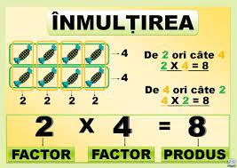
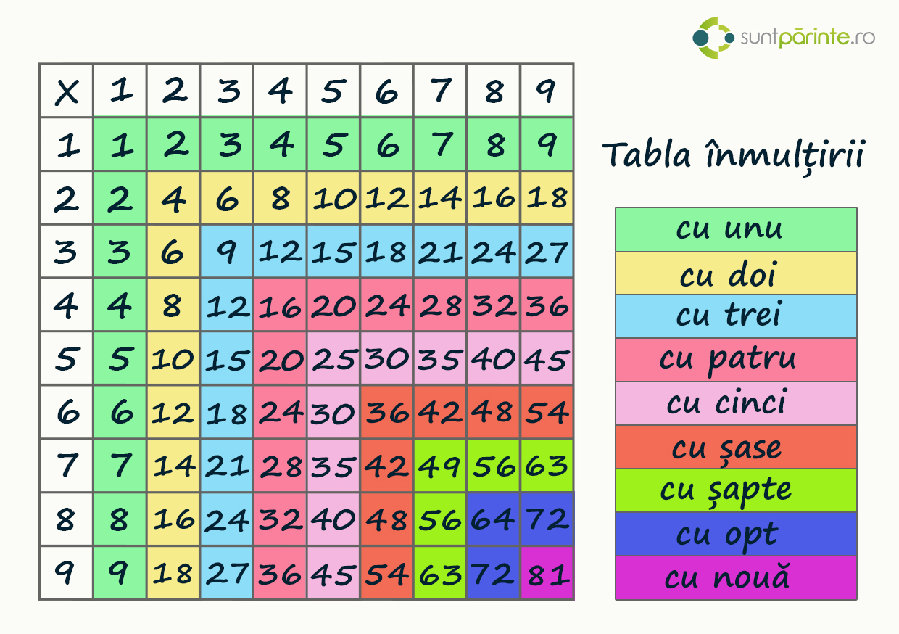
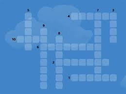
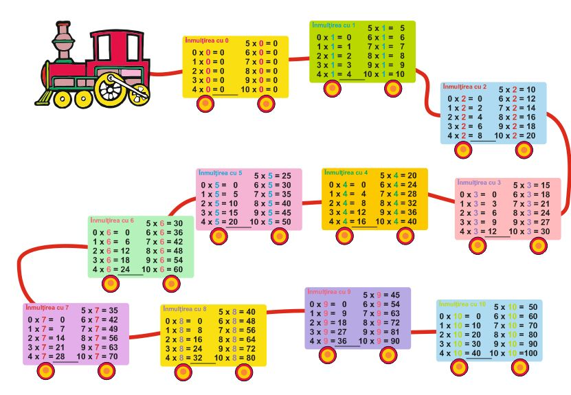
Ce este inpartirea?
Împărțirea este o operație aritmetică prin care se determină de câte ori un număr poate fi cuprins în altul.
A : B = C, unde
A este denumit deîmpărțit
B este denumit împărțitor sau divizor
C este denumit cât
Operația de împărțire a numerelor naturale corespunde divizării unei mulțimi de obiecte de un anumit număr cardinal (deîmpărțitul) în submulțimi cu numărul de elemente egal împărțitorului. Câtul este numărul de submulțimi care se pot obține.
Unele numere întregi nu pot fi împărțite exact cu alte numere, există un rest întreg nenul. Acest rest reprezintă numărul de obiecte rămas după formarea submulțimilor cu cardinalitatea împărțitorului. Pentru împărțirea cu rest este valabilă teorema împărțirii cu rest.
Împărțirea unui obiect sau corp geometric într-un număr de porțiuni permite formarea noțiunii de fracție subunitară cu numitorul numărul de porțiuni dorite. O fracție cu numărătorul diferit de unu reprezintă mai multe porțiuni din divizarea unui întreg. Un exemplu de divizare geometrică este cea a unei sfori, reprezentate ca segment de dreaptă, în mai multe bucăți de aceeași lungime. Similar o suprafață plană poate fi divizată în mai multe subsuprafețe de aceeași arie.
Pentru operațiile de împărțire nu sunt valabile proprietățile de comutativitate și asociativitate. Elementul neutru este același ca pentru înmulțire.
Pentru numerele raționale împărțirea poate fi exprimată ca înmulțirea cu inversul numărului la care se împarte.
Împărțirea numerelor naturale este operația inversă a înmulțirii,
adică dacă a*b=c , atunci c/a=b sau c/b=a.
Dacă , atunci c/a=b atunci c = deîmpărțit , a = împărțitor, iar b = cât
Exemplu : 36 : 9 = 4 , deoarece 4* 9 = 36
36 = deîmpărțit
9 = împărțitor
4 = cât
Împărțirea unui număr la 10 , 100 , 1000 , ……. Pentru a împărți un număr la 10, 100, 1000, …….. ,,tăiem” de la ultima cifră/ultimele cifre 0, sau 00, sau 000 ,…… , adică : 150 : 10 = 15 15600: 100 = 156
Observație : Împărțirea la 0 nu are sens , adică a : 0 nu se efectuează
0 : a = 0 pentru orice număr nenul a
Împărțirea nu este asociativă, nici comutativă și nu are element neutru
Oricare ar fi numerele natural a , b și c , c≠ 0, dacă a și b se împart exact la c , atunci :
(a+b) : c = a : c + b : c
(a - b) : c = a : c - b : c
Dacă a : b = c , atunci putem înmulți sau împărți și deîmpărțitul și împărțitorul cu același număr, fără ca rezultatul să se schimbe
a : b = c , rezultă că ( a* m ) : ( b * m) = c , b, m ≠0
a : b = c , rezultă că ( a : m ) : ( b : m) = c , b, m≠ 0
Înmulțirea și împărțirea mai au următoarele proprietăți în raport cu relațiile de egalitate și inegalitate :

 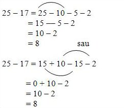
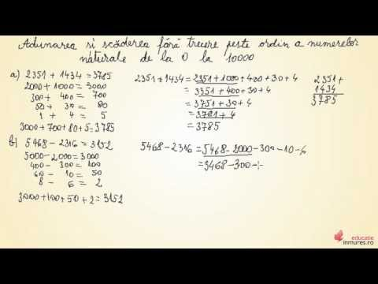
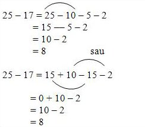
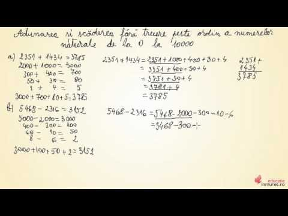
 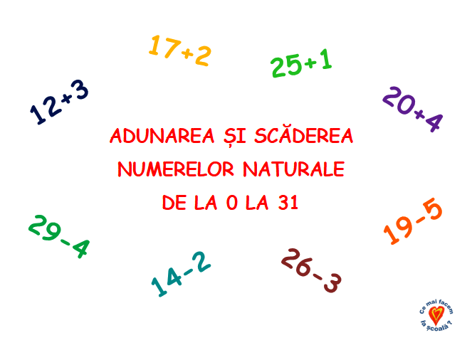
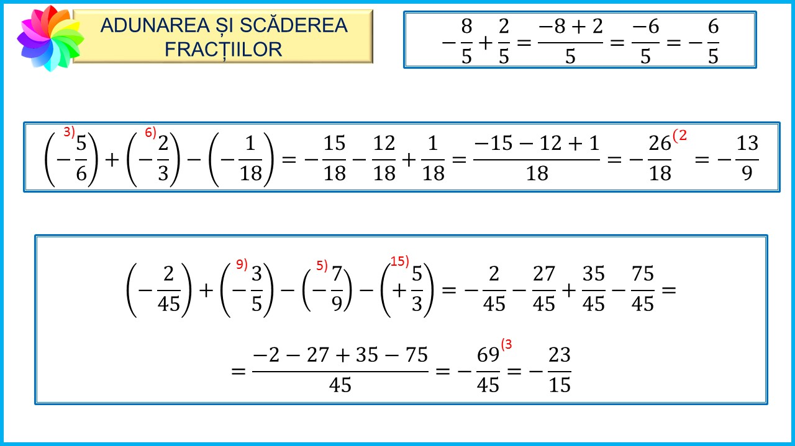
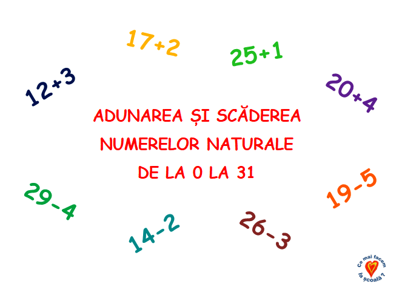
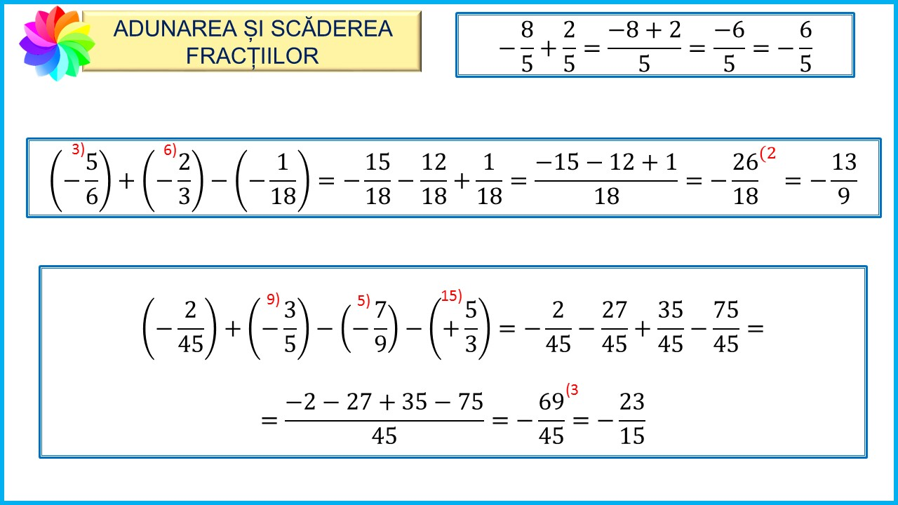
 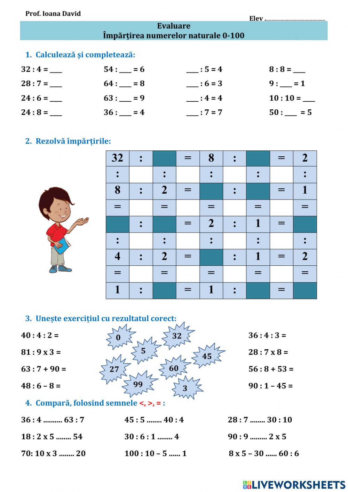
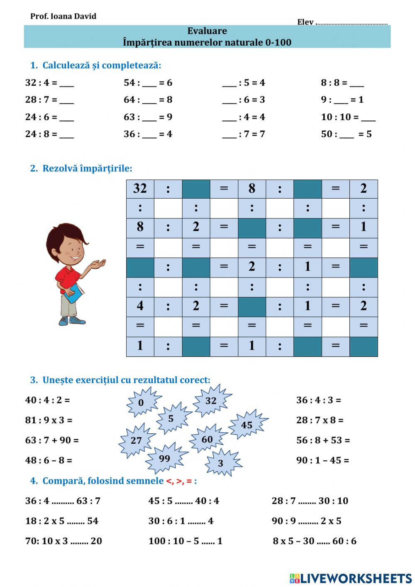
.jpeg) 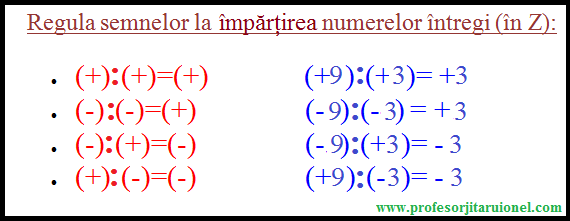
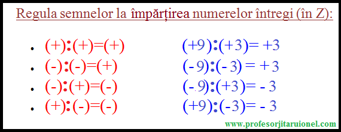